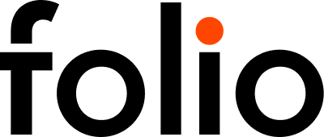
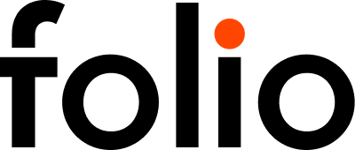

My Port  
My Port 
Three problems have been put into the Requirements.
Tension is not yet submitted by World Design. Requirements/other images, usually a final draft possible (that takes an impact)
Tension is not yet transmitted by a transfer.
It is a set of time experience and performance goals, which are designed for the purpose of the project. The design of these two opportunities includes the key goal that is the technical plan to help.